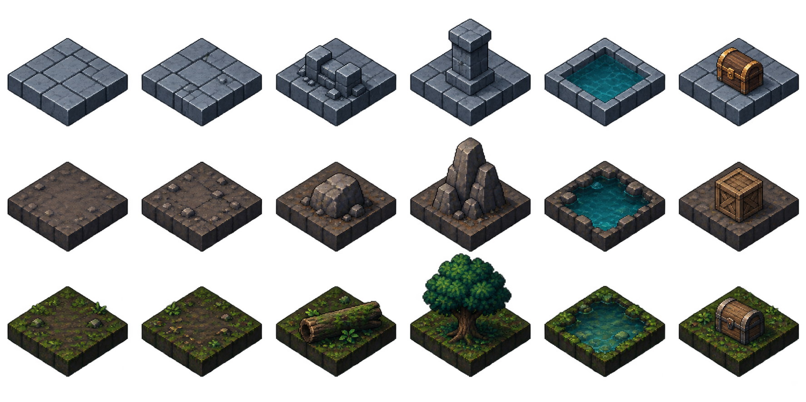

실제 8×8 배치 데이터에 생성 타일을 조합한 HTML 미리보기입니다. 게임 엔진의 그래픽 변경은 아닙니다.
타일 불러오는 중…
붉은 표식: 적 시작 위치 · 청록 테두리: 연결 가능한 입구 · 솟은 블록: 통행 차단 · 파랑: 얕은 물 · 점무늬: 잔해
위부터 던전·동굴·지하 숲. 아래 원본의 바닥과 장애물을 잘라 그리며 발판을 2:1 격자에 맞췄습니다. 잔해는 낮은 바닥 표식으로 유지합니다. 실제 게임에는 아직 적용하지 않았습니다.
